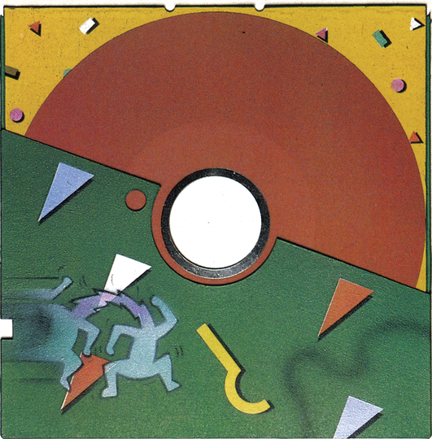
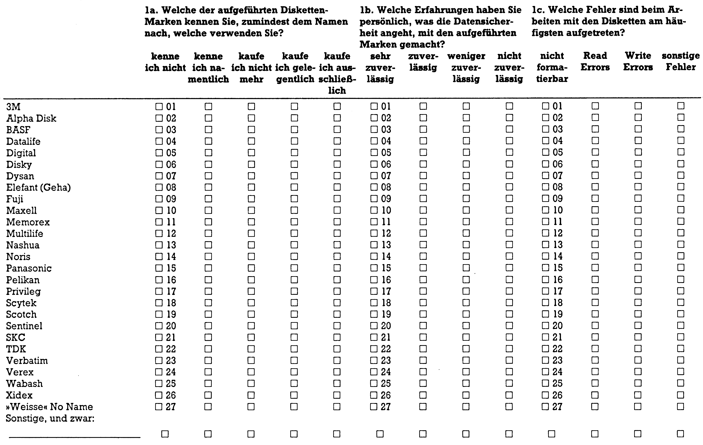
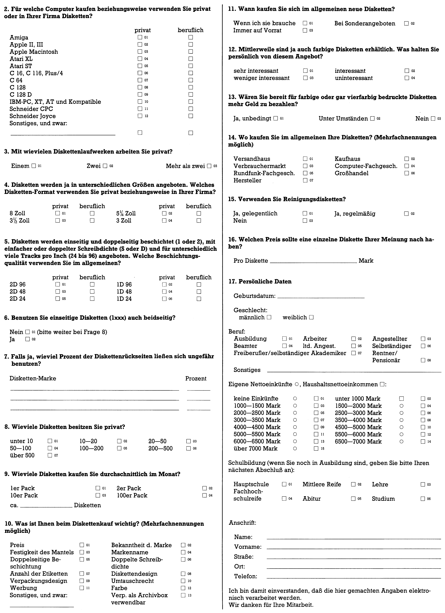

Die ideale Diskette
Beim Kauf unbespielter Disketten haben Sie die Qual der Wahl. Das vielfältige Angebot dieser Speichermedien ist kaum noch zu überschauen. Doch wie sollte Ihre ideale Diskette aussehen?

Niemand kann über die Qualität von Computerzubehör besser Auskunft geben als unsere Leser. Ihre täglichen Erfahrungen mit Hard- und Software können durch kein Testverfahren ersetzt werden. So können Probleme mit einem bestimmten Gerätetyp oder einer bestimmten Marke Einzelfälle sein, helfen aber unter Umständen auch, Schwächen in der Fabrikation oder im Service aufzudecken.
Mangelhafte Produkte können sich, zumindest langfristig betrachtet, nicht durchsetzen und werden auf natürliche Weise vom Markt verdrängt. Disketten zählen selbstverständlich auch zu den Produkten, bei denen Qualität und Lebensdauer besonders wichtig sind.
Das 64'er-Magazin und seine Schwesterzeitschriften Happy-Computer und Computer persönlich haben es sich zur Aufgabe gemacht, die Wünsche und Probleme ihrer Leser bei den Herstellern und Vertreibern vorzutragen. Wenn Sie also Benutzer von Disketten sind, teilen Sie uns Ihre persönlichen Erfahrungen mit. So kann Ihr Wunschprodukt vielleicht eines Tages tatsächlich produziert werden.
Zu gewinnen gibt es selbstverständlich auch etwas. Unter allen Einsendungen, die uns erreichen, verlosen wir insgesamt 1500 Disketten in 10er Packungen.
Wenn Sie an der Verlosung teilnehmen möchten, schicken Sie bitte Ihren ausgefüllten Fragebogen bis zum 16. Februar 1987 (Poststempel) an:
Markt & Technik Verlag
Aktiengesellschaft
Redaktion 64'er
— Disketten-Umfrage —
Hans-Pinsel-Str. 2
8013 Haar bei München
Wir wünschen Ihnen viel Glück bei der Verlosung.
(nj/aw)
